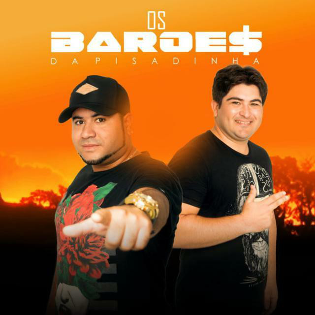
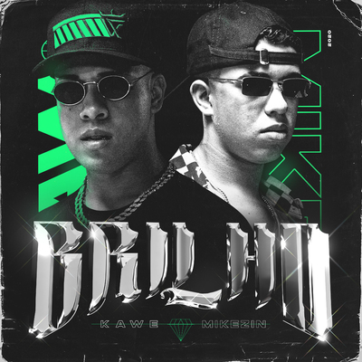

Barões da Pisadinha
Os Barões da Pisadinha é uma banda musical brasileira de forró e tecnobrega formada em dezembro de 2015, na cidade de Heliópolis, na Bahia. O grande sucesso da banda é a música "Tá Rocheda"

Eletronica
O gênero é caracterizado por batidas rápidas, próximas a 170 BPM. Incorporou elementos de culturas musicais como o dancehall, electro, funk, Hip-Hop, house, jazz, metal, pop, reggae, rock, techno e trance. Uma das principais vertentes da música eletrônica que emergiu no início da década de 1990.
Trap
Trap é um subgênero do rap que se originou na década de 2000 com DJ Paul no sul dos Estados Unidos. Ganhou popularidade em meados de 2007 com o surgimento de vários grupos de rap e rappers como Gucci Mane, OJ da Juiceman e produtores como Drumma Boy, Shawty Redd e DJ Zaytoven.

Meu nome é Giovani atualmente fiz uma pagina sobre estilo musicais durante meu curso de analise é desenvolvimento de sistemas;